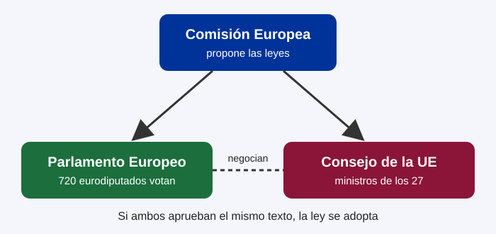
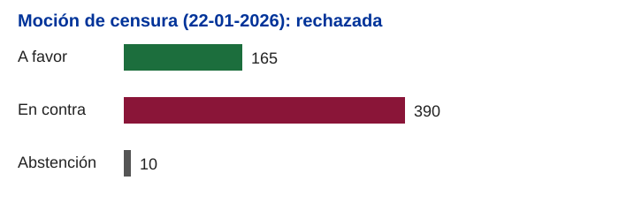

La Unión Europea decide: las 100 decisiones clave de 2026
Qué ha votado el Parlamento Europeo este año, quién toma cada decisión, cómo votó cada grupo político y qué hicieron los 61 eurodiputados españoles. Todo con enlaces a los documentos oficiales.
¿Quién decide en la Unión Europea?
En la UE ninguna institución decide sola. Las leyes siguen un reparto de poder entre varias instituciones:
- Comisión Europea: propone las leyes y vigila que se cumplan.
- Parlamento Europeo: 720 eurodiputados elegidos por los ciudadanos que votan, enmiendan y aprueban leyes y presupuestos.
- Consejo de la UE: los ministros de los 27 Estados miembros; aprueba las leyes junto al Parlamento.
- Consejo Europeo: jefes de Estado y de Gobierno; marca las grandes prioridades políticas.
- Tribunal de Justicia de la UE: comprueba que las normas respetan los Tratados.

¿Cómo se aprueba una ley europea?
- La Comisión Europea presenta una propuesta.
- Una comisión parlamentaria la estudia y nombra a un ponente que redacta un informe.
- El pleno del Parlamento vota su posición y las enmiendas.
- Parlamento y Consejo negocian («trílogos») hasta acordar un texto común.
- Ambos aprueban el texto final y se publica en el Diario Oficial de la UE.
Cómo leer una ficha de votación
Cada una de las 100 decisiones tiene su propia ficha. Así puedes interpretarla:
- A favor / En contra / Abstención
- Lo que votó cada eurodiputado presente en el pleno.
- No votó
- El eurodiputado no participó en esa votación (ausente o no pulsó el botón).
- Quién decide
- Indica qué instituciones tienen la última palabra según el tipo de procedimiento.
- Documentos
- Enlaces al informe o propuesta votada, al texto aprobado y a la ficha oficial del procedimiento.

Tipos de decisión y quién tiene la última palabra
| Procedimiento | Quién decide | Decisiones |
|---|---|---|
| Procedimiento legislativo ordinario | Propone la Comisión Europea; deciden juntos el Parlamento Europeo y el Consejo de la UE (ministros de los 27). | 42 |
| Informe de propia iniciativa | Decide el Parlamento Europeo. Es una posición política, no una ley obligatoria. | 27 |
| Resolución del Parlamento | Decide el Parlamento Europeo. Expresa su posición política sobre un tema de actualidad. | 7 |
| Acto no legislativo / acuerdo internacional | Negocia la Comisión; firma y decide el Consejo de la UE con la aprobación del Parlamento Europeo. | 5 |
| Iniciativa legislativa del Parlamento | El Parlamento Europeo pide a la Comisión que presente una propuesta de ley. | 4 |
| Procedimiento presupuestario | Deciden el Parlamento Europeo y el Consejo de la UE, que juntos forman la autoridad presupuestaria. | 4 |
| Procedimiento de consulta | Propone la Comisión; decide el Consejo de la UE tras recibir el dictamen (no vinculante) del Parlamento. | 3 |
| Objeción a un acto delegado | La Comisión adopta el acto; el Parlamento Europeo (o el Consejo) puede vetarlo. | 2 |
| Procedimiento de aprobación | Decide el Consejo de la UE, pero necesita la aprobación del Parlamento Europeo. | 2 |
| Moción de censura | Decide el Parlamento Europeo. Necesita dos tercios de los votos emitidos y la mayoría de los eurodiputados para destituir a la Comisión. | 1 |
| Acuerdo interinstitucional | Lo pactan y aprueban el Parlamento Europeo y la Comisión Europea. | 1 |
| Procedimiento presupuestario interno | Decide el Parlamento Europeo sobre su propio presupuesto o sus orientaciones. | 1 |
| Aprobación de la gestión | Decide el Parlamento Europeo si aprueba cómo se gastó el presupuesto de la UE. | 1 |
2026 en cifras
| Dato | Valor |
|---|---|
| Decisiones analizadas | 100 |
| Aprobadas | 93 |
| Rechazadas | 7 |
| Votación más ajustada | Consulta al Tribunal de Justicia sobre el acuerdo UE-Mercosur (334 a favor, 324 en contra) |
| Mayor consenso | Cumplimiento de los derechos de los pasajeros (652 a favor, 2 en contra) |
Temas de las decisiones
- Exteriores y defensa: 12 decisiones
- Clima y medio ambiente: 10 decisiones
- Economía: 9 decisiones
- Instituciones: 9 decisiones
- Presupuesto: 8 decisiones
- Salud: 7 decisiones
- Comercio: 6 decisiones
- Digital: 6 decisiones
- Empleo y social: 5 decisiones
- Derechos humanos: 5 decisiones
- Migración: 5 decisiones
- Ucrania: 5 decisiones
- Agricultura y pesca: 5 decisiones
- Justicia e interior: 4 decisiones
- Transporte: 3 decisiones
- Educación y juventud: 1 decisiones